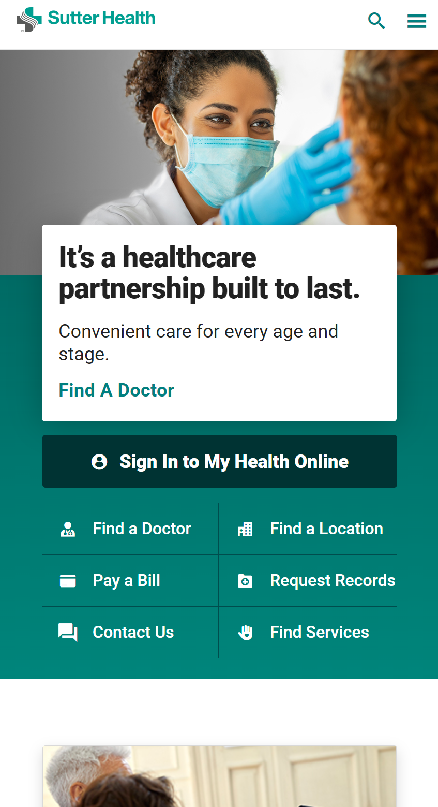
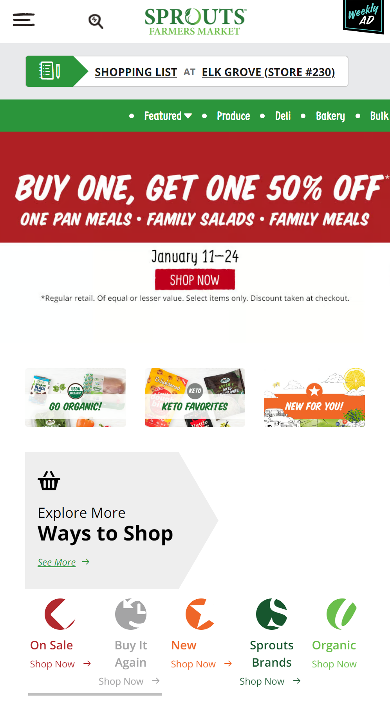
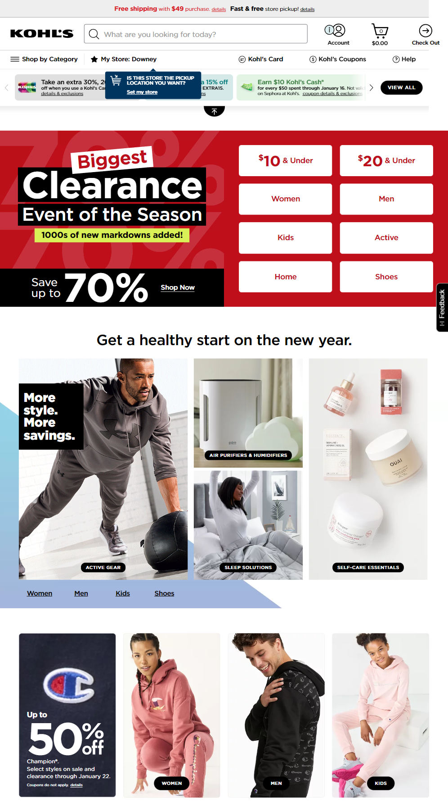

Repetition
Sutter Health
sutterhealth.org The website for Sutter Health uses repetition in a number of ways. Repetition is used for the color scheme which is taken from the logo. Repetiton is also in the use of 3 elements per column on the hero box as well as the repeated use of rectangles. It shows the user their different options right from the start and they do not need to hunt around to find a doctor, a location, how to pay a bill, or even how to contact them as these are generally the most important aspects when looking for a healthcare company.
Hick's Law
Sprouts
shop.sprouts.com Sprouts employs Hick's Law in their website which allows a user to narrow down their selections as they shop. This is evident in the navigation bar at the top, the specialized menus that can be chosen from, and the various icons at the bottom which allows a customer to choose how they want to find their items. As online shopping has become increasingly more common, and delivery services which will bring your groceries to you, the website wants to be able to allow the customer to feel as if they are shopping in the convenience of their own home, yet not overwhelming the customer with all of the options as once.
Contrast
Kohl's
kohls.com In this example, Kohl's has used contrast as a way to grab the customer's eye. By pairing the black background with the white lettering, it immediately stands out. To further emphasize the part that they want the customer to see, a red background is used to instantly draw our eyes there. This visual hierarchy through contrast shows us exactly where the website designers want us to look. This big bright banner entices us to click and see what sort of deals they have. It stands out from the rest of the website because of the contrast.